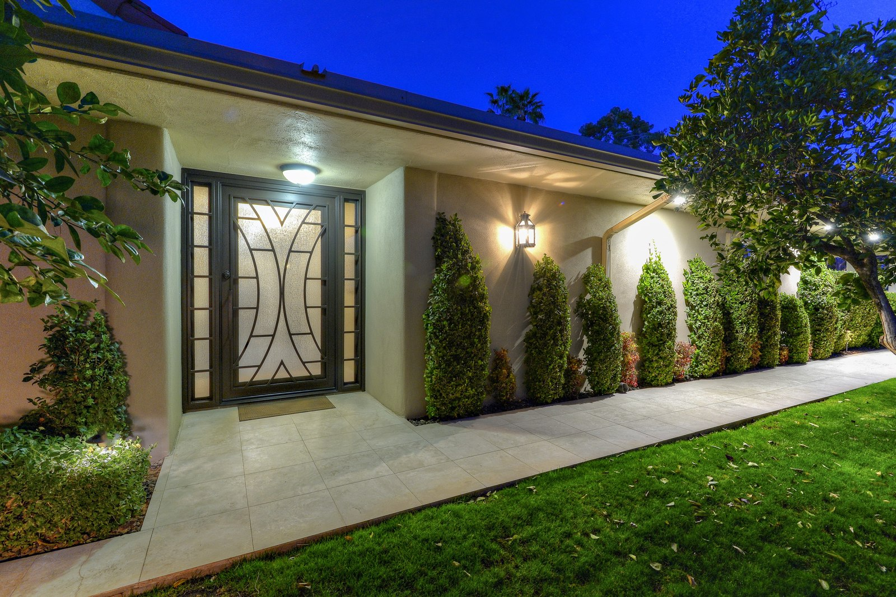

McCormick Ranch & Gainey Ranch Real Estate: Homes and Lifestyle
Welcome to McCormick Ranch & Gainey Ranch
Lakes, golf, and greenbelt living in the heart of ScottsdaleWhat to Love
- Miles of connected greenbelt biking and walking paths
- Golf courses and lakes built into the neighborhood
- Guard-gated golf villas in Gainey Ranch
- Central location between Old Town and North Scottsdale
What is the McCormick Ranch and Gainey Ranch area known for?
McCormick Ranch and Gainey Ranch are master-planned communities defined by tree-lined streets, greenbelts, lakes, golf courses, and connected bike paths. Traveling north from Old Town Scottsdale, the atmosphere shifts from urban nightlife to a resort-style residential setting built around water and green space.
The Scottsdale Greenbelt runs through the area, linking neighborhoods with miles of paths used for walking, running, and cycling between parks, golf courses, and lakes.
What types of homes are available in McCormick Ranch and Gainey Ranch?
Housing options include patio homes, golf villas, luxury gated communities, and waterfront homes positioned along the area's lakes and greenbelts. The mix supports both single-level, low-maintenance living and larger, multi-story family-sized homes.
Golf villas and lakefront patio homes are common as lock-and-leave, low-maintenance residences, while single-family homes on standard lots offer more traditional yard space.
What landmarks define McCormick Ranch and Gainey Ranch?
The area is defined by the McCormick Ranch and Gainey Ranch master plans themselves, along with the Scottsdale Greenbelt that threads through both communities. Multiple golf courses and man-made lakes are woven directly into the neighborhood layout rather than set apart from it.
What is the difference between McCormick Ranch and Gainey Ranch?
McCormick Ranch is the larger and older of the two master plans, with a broader mix of single-family neighborhoods, condos, and patio homes spread across multiple villages built around its lakes and golf courses. Gainey Ranch is smaller and more resort-oriented, built around the Hyatt Regency Scottsdale Resort and several guard-gated golf villa communities. [VERIFY current resort branding and community names]
Buyers who want a broader range of price points and home styles typically start their search in McCormick Ranch, while buyers focused specifically on resort-style, guard-gated golf villas tend to concentrate their search within Gainey Ranch.
What resort, dining, and golf amenities are in McCormick Ranch and Gainey Ranch?
The Grand Hyatt Scottsdale Resort (formerly the Hyatt Regency Scottsdale Resort & Spa at Gainey Ranch) [VERIFY current resort branding] sits inside Gainey Ranch and offers an on-site spa along with several restaurants, including SWB for elevated Southwest bistro fare, Alto for Italian, and the six-seat sushi counter Noh.
McCormick Ranch Golf Club has been a public Scottsdale staple since 1972, with two 18-hole courses (Pine and Palm) open to residents and visiting golfers alike — a contrast to the members-only clubs at Gainey Ranch itself. [VERIFY current green fees and course conditions]
What should buyers know before purchasing in McCormick Ranch or Gainey Ranch?
Many communities in this area carry an HOA that maintains shared greenbelt, lake, and golf-adjacent landscaping, so buyers should review HOA dues and rules before purchasing. [VERIFY current HOA dues per community]
Because the area sits between Old Town Scottsdale and the Shea Corridor, it functions as a middle ground for buyers who want resort-style amenities without the density of Old Town or the estate-lot scale of the Cactus Corridor.


Common Questions
Are McCormick Ranch and Gainey Ranch gated communities?
Some sections are guard-gated luxury communities, particularly golf-villa and lakefront enclaves within Gainey Ranch, while other sections of McCormick Ranch are open, established neighborhoods without gates.
Is there an HOA in McCormick Ranch and Gainey Ranch?
Most communities in the area carry an HOA that maintains shared greenbelt, lake, and golf-adjacent landscaping. Dues vary by community, so buyers should confirm current HOA costs before purchasing.
What golf courses are near McCormick Ranch and Gainey Ranch?
McCormick Ranch Golf Club offers two public 18-hole courses (Pine and Palm) open to residents and visitors, while Gainey Ranch's golf club is reserved for private members and resort guests. Course access and membership structure should be verified for a specific property.
Is there a resort inside Gainey Ranch?
Yes. The Grand Hyatt Scottsdale Resort (formerly the Hyatt Regency Scottsdale Resort & Spa at Gainey Ranch) sits inside the community and offers an on-site spa and several restaurants. [VERIFY current resort branding]


Considering a Move to McCormick Ranch & Gainey Ranch?
Call 480-734-0870 or email laura@laurajorden.com for current listings and market data.
Contact Laura